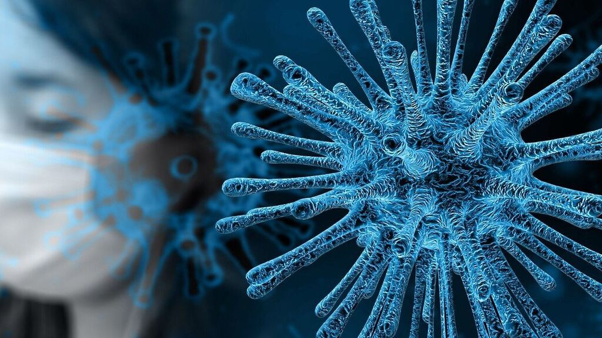
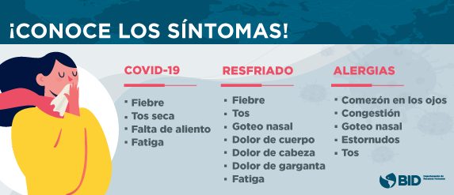

En este sitio web se puede encontrar información y orientaciones de la OMS acerca del actual brote de enfermedad por coronavirus (COVID-19) que fue notificado por primera vez en Wuhan (China) el 31 de diciembre de 2019.
¿Que es un coronavirus?
Los coronavirus son una extensa familia de virus que pueden causar enfermedades tanto en animales como en humanos. En los humanos, se sabe que varios coronavirus causan infecciones respiratorias que pueden ir desde el resfriado común hasta enfermedades más graves como el síndrome respiratorio de Oriente Medio (MERS) y el síndrome respiratorio agudo severo (SRAS). El coronavirus que se ha descubierto más recientemente causa la enfermedad por coronavirus COVID-19.

¿Que es COVID-19?
La COVID‑19 es la enfermedad infecciosa causada por el coronavirus que se ha descubierto más recientemente. Tanto este nuevo virus como la enfermedad que provoca eran desconocidos antes de que estallara el brote en Wuhan (China) en diciembre de 2019. Actualmente la COVID‑19 es una pandemia que afecta a muchos países de todo el mundo.
¿Cuales son los sintomas?
Los síntomas más habituales de la COVID-19 son la fiebre, la tos seca y el cansancio. Otros síntomas menos frecuentes que afectan a algunos pacientes son los dolores y molestias, la congestión nasal, el dolor de cabeza, la conjuntivitis, el dolor de garganta, la diarrea, la pérdida del gusto o el olfato y las erupciones cutáneas o cambios de color en los dedos de las manos o los pies. Estos síntomas suelen ser leves y comienzan gradualmente. Algunas de las personas infectadas solo presentan síntomas levísimos.es de todo el mundo.
La mayoría de las personas (alrededor del 80%) se recuperan de la enfermedad sin necesidad de tratamiento hospitalario. Alrededor de 1 de cada 5 personas que contraen la COVID‑19 acaba presentando un cuadro grave y experimenta dificultades para respirar. Las personas mayores y las que padecen afecciones médicas previas como hipertensión arterial, problemas cardiacos o pulmonares, diabetes o cáncer tienen más probabilidades de presentar cuadros graves. Sin embargo, cualquier persona puede contraer la COVID‑19 y caer gravemente enferma. Las personas de cualquier edad que tengan fiebre o tos y además respiren con dificultad, sientan dolor u opresión en el pecho o tengan dificultades para hablar o moverse deben solicitar atención médica inmediatamente. Si es posible, se recomienda llamar primero al profesional sanitario o centro médico para que estos remitan al paciente al establecimiento sanitario adecuado.
¿Como se propaga?
Una persona puede contraer la COVID‑19 por contacto con otra que esté infectada por el virus. La enfermedad se propaga principalmente de persona a persona a través de las gotículas que salen despedidas de la nariz o la boca de una persona infectada al toser, estornudar o hablar. Estas gotículas son relativamente pesadas, no llegan muy lejos y caen rápidamente al suelo. Una persona puede contraer la COVID‑19 si inhala las gotículas procedentes de una persona infectada por el virus. Por eso es importante mantenerse al menos a un metro de distancia de los demás. Estas gotículas pueden caer sobre los objetos y superficies que rodean a la persona, como mesas, pomos y barandillas, de modo que otras personas pueden infectarse si tocan esos objetos o superficies y luego se tocan los ojos, la nariz o la boca. Por ello es importante lavarse las manos frecuentemente con agua y jabón o con un desinfectante a base de alcohol.
La OMS está estudiando las investigaciones en curso sobre las formas de propagación de la COVID‑19 y seguirá informando sobre las conclusiones que se vayan obteniendo.